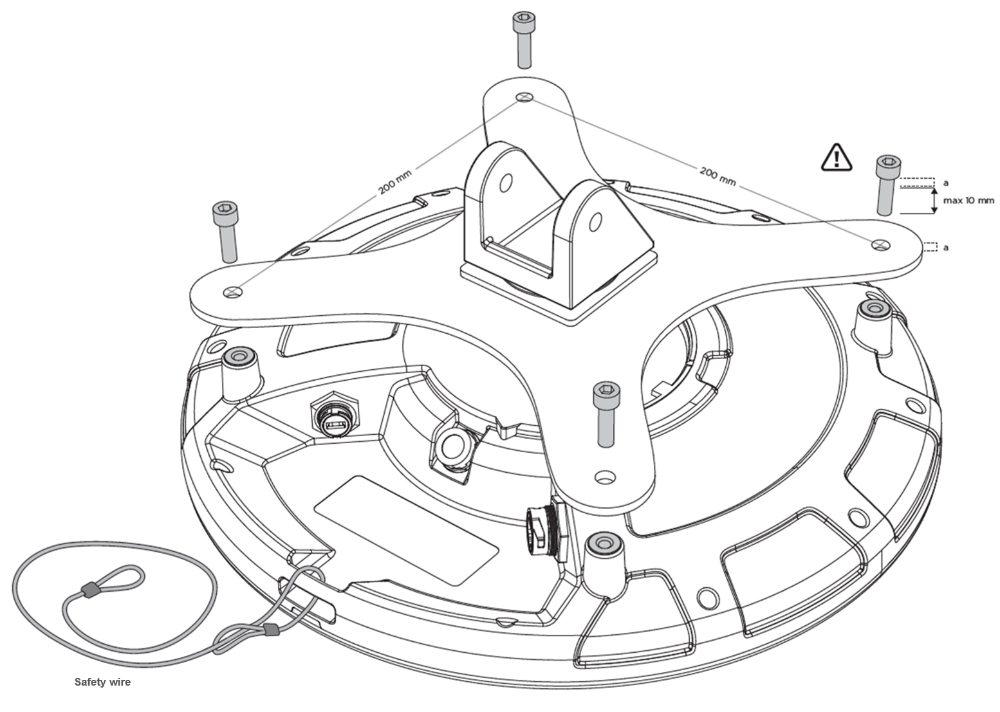

Q35ロケーターの使用方法
このセクションでは、Q35ロケーターの設置方法と、電源とネットワークへの接続方法について役立つ情報を提供します。
設置
Quuppa Q35は、その側面または前面に金属製の障害物 (空調ダクト、大型の天井用トラス、建物の上部構造など) がない場所に取り付ける必要があります。必要に応じて剛性コンジットを使用してQ35を低い位置に設置し、こうした障害物から遠ざけてください。
VESAマウントを使用した設置方法
対応取り付けブラケットの選択
Q35の取り付け穴はVESA MIS-F、200、Y、6規格 (200x200mm パターンのM6ねじ穴4個) に従って配置されています。取り付ける環境の要件に従って取り付けブラケットを選択してください。取り付けブラケットのモデルによっては、取り付け後にケーブルポートにアクセスできなくなる場合があります。必ずQuuppa Q35 (1.3 kg) の重量と可能な風荷重を支持できる取り付けブラケットを使用してください。
デバイスの設置

- イーサネットケーブル (使用する場合はMicro USB ケーブルも) をロケーターに接続します。デバイスのイーサネットポートは、USB Firewire RR-125300-03-ZX(GTContact GT125300-03-Z3)です。設置に進む前にケーブルの対応性を確認してください。Q35にはシールド付き・シールドなしのいずれのイーサネットケーブル (Cat5e/6 など) も使用できるため、お客様の装備環境に最適なタイプのケーブルを選択できます。例えば厳しい環境 (工場や屋外など) では、電磁干渉 (EMI) や静電気放電に対する保護を強化できるよう、シールド付きケーブルを選択するよう推奨します。Note: 屋外環境 (または高湿やほこりの多い屋内環境) にデバイスを設置する場合は、屋外用に設計されたケーブルとコネクタを使用し、水、湿気、ほこりからデバイスを保護してください。その場合、完全に防水の設置となるよう、以下を推奨します。
- ケーブル製造元により防水コネクタが取り付けられている既製のケーブルを使用してください。例えば、USB FireWire RR-125320-02-XX (GTContact GT125320-0X-xx) などが適しています。既製のケーブルが使用できない場合は、RJ45コネクタ上で対応するコネクタハウジング部品を使用することもできます。例えば、USB FireWire RR-125360-00やUSB FireWire RR-125330-00が使用可能です。
- 製造元の指示に従って、必ずケーブルコネクタをしっかりと固定してください。
- USBポートの保護キャップは、USBポートを使用してロケーターに電力を供給する場合のみ取り外してください。また、その場合は必ず防水USBケーブルコネクタを使用してください。Q35のUSBポートはUSBFireWire RR-11A200-0P-XXであり、USBFireWire RR-11B220-05-XXシリーズの防水USBケーブルに対応します。
対応するコネクタとケーブルの詳細については、Quuppaサポートチーム (support@quuppa.com) までお問い合わせください。
- イーサネットケーブルテスターを使用してケーブルを確認し、必ずすべてのコネクタをしっかりと固定します。ケーブルをPoEスイッチに配線する際は、ケーブルを鋭角に曲げたり、引っ張ったりしないでください。接続に関する問題のトラブルシューティングには、デバイスのインジケーターランプも使用できます。詳細については、下記のネットワークへの接続セクションを参照してください。
- Q35を取り付けブラケットに4本のボルトで取り付けます (下図を参照)。M6ボルトと2 Nmのアセンブリトルクを使用します (最大許容トルク：2.5Nm)。
薄型のブラケットを使用する場合は、長さ10mmのM6ボルトを使用できます。厚いブラケットの場合は、適切なボルト長を確認してください (使用するボルトの最大長＝使用するVESAマウントの厚さ＋10mm)。デバイスを破損を避けるため、必ず適切なサイズのボルトを使用してください。

- VESA取り付けブラケットを壁、天井、マストに取り付けます。Warning: 設置に先立ち、設置面やマストが機器の重量と可能な風荷重を支持できることを必ず確認してください。
- Q35を目的の対象エリアに向け、すべての留め具を締めます。
- イーサネットケーブルのもう一方の端がQuuppaシステムに接続されているデバイスに接続されていることを確認します。
設置のヒント
-
屋外に設置する場合は、雨水が流れ落ちるようにデバイスを傾けて設置してください。

-
大型のプロジェクトでは、設置部品をすべて注文する前にテスト設置を実行してください。
-
地域当局の安全要件を確認し、必要に応じて安全ワイヤーを使用して安全に取り付てください。
-
目的の対象エリアに向けるにはQ35を傾ける必要がある場合は、必ず必要な機械的傾斜となるようデバイスを取り付けてください。
電源への接続
オプション 1：パワー オーバー イーサネット (PoE) を使用する
Q35には、PoEスイッチやパワーインジェクターなどの標準IEEE 802.3atタイプ1 PoEコンポーネントを電源として使用できます。標準の認定PoEデバイスのみを使用してください。PoEを使用する場合、別のDC電源は必要ありません。
オプション 2：別の5V DC Micro USBを使用する
PoEコンポーネントを使用しない場合は、Q35をMicro USBで5V電源に接続します。適合する電源のみを使用してください。適合する電源についてご不明な点がある場合は、Quuppaまでお問い合わせください。
Q35は、電源に接続すると自動的にオンになります。赤いインジケーターランプが複数回点滅した後、Q35をQuuppa Positioning Engineに接続するまで、常に点灯した状態になります。
ネットワークへの接続
RJ-45イーサネットソケットを使用して、Q35をイーサネットケーブルでネットワークに接続します。安全とデバイスの損傷防止のため、Q35は標準の認定ネットワークコンポーネントにのみ接続してください。
Q35がネットワークに正しく接続されていても、QPEソフトウェアにより有効化されていないと、赤いインジケーターランプがゆっくりと点滅します。Q35がQPEソフトウェアにより有効化されると、青いインジケーターランプが点滅または点灯します。追跡モード時は、必要に応じて、ロケーターのインジケーターランプをオフにすることができます。詳細については別冊の説明書を参照してください。
インジケーターランプ表
以下の表は、ロケーターのインジケーターランプに表示される様々なモードを示したものです。
| カラーシーケンス | シーケンスの説明 | インジケーターランプの表示モード |
|---|---|---|
 |
赤 (点滅) - 緑 - 青 (1回点滅) | 再起動シーケンス |
| 赤 (点灯) | ロケーター電源オン、IPアドレスなし | |
 |
赤 (点滅) | ロケーターがネットワークに接続 |
 |
青 (点滅) | ロケーター配置モード |
| 青 (点灯) | ロケーター追跡モード | |
 |
白 (点滅) | ロケーター ファームウェアのアップグレード中 |
 |
赤 （2回点滅後消灯の繰り返し) | ロケーター サブスクリプション無効 |
| 消灯 | 追跡モードでのオプションのインジケーターランプ状態 |